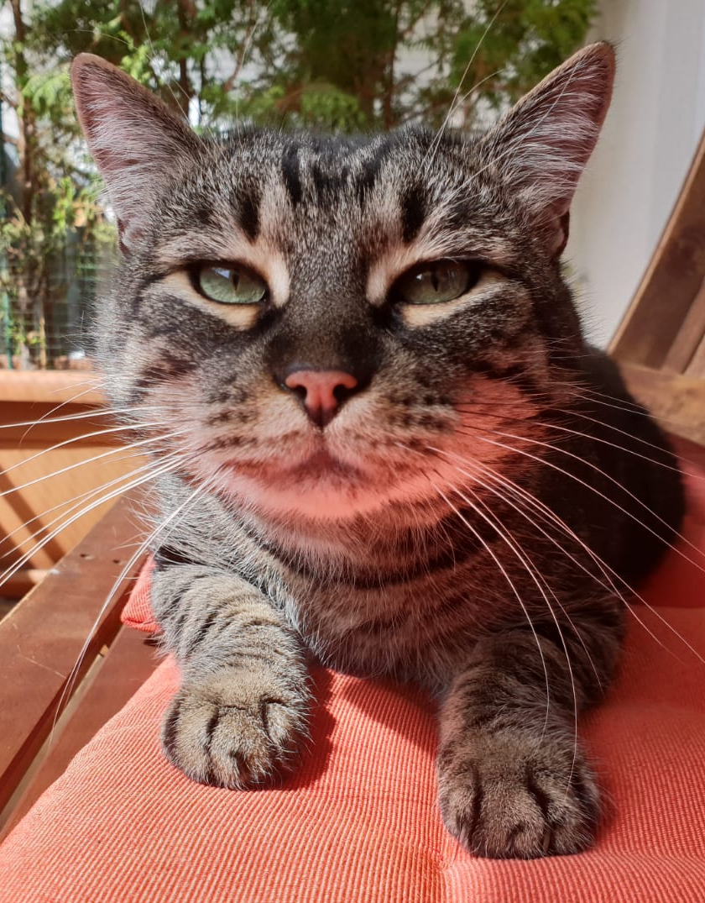

Maxi's Fakebook

Steckbrief
Mein Name ist Maxi. Ich bin eine "Europäische Kurzhaar" Katze und lebe im schönen Wien.
- Geschlecht: Männlich
- Alter: Man weiß es nicht so genau. Geschätzt 6-8 Jahre alt.
- Lieblingsspielzeug: Haargummis
- Lieblingsfutter: Lachs, Tunfisch, Rind
- Staatsbürgerschaft: Österreich
Sprachen
- Katzensprache (Muttersprache): fließend
- alle anderen Sprachen der Welt: Achte auf Körpersprache
Was es noch zum Sagen gibt
Aufgewachsn bin ich in einer Bowling-Halle. Nachdem diese Konkurs gegangen ist, wurde ich von 2 ganz netten Menschen gerettet.
Seit dem lebe ich in "Schnurriehausen" mit zwei weiteren Katzen in einem Haushalt.
Ich bestelle mein Futter immer über folgender Web-Seite